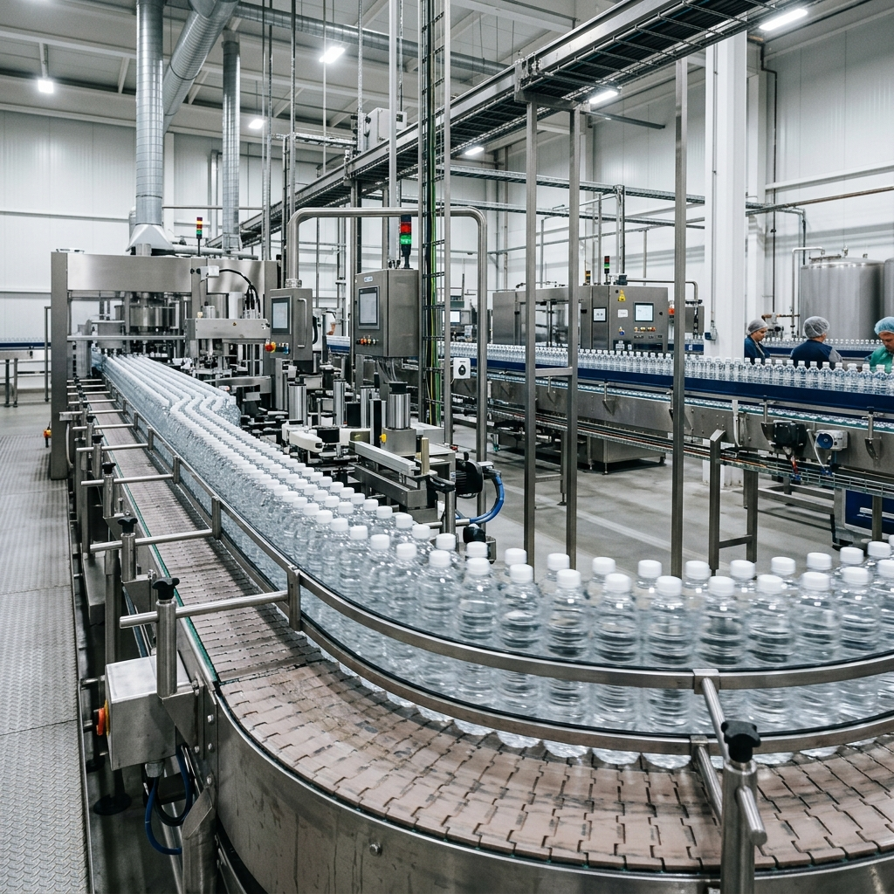
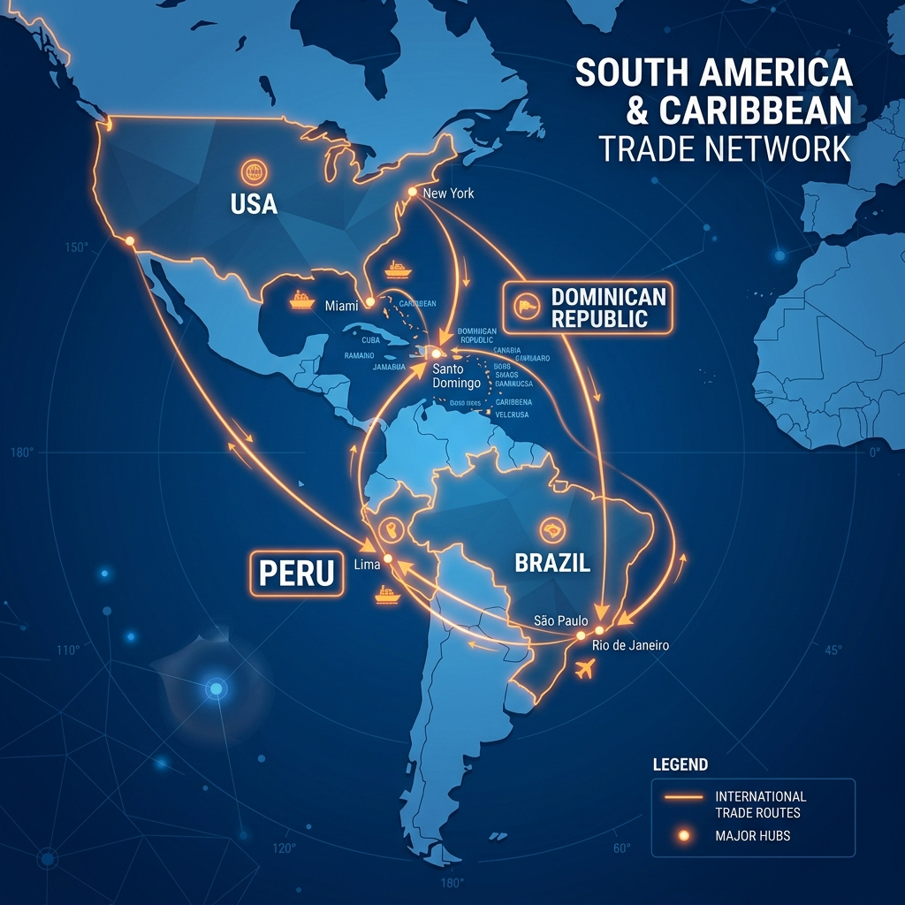

Fundada en 1988 por la familia Añaños Alcázar en Ayacucho, en un contexto de terrorismo que provocaba el desabastecimiento de productos en la región. Ante la escasez de gaseosas, la familia decidió producir su propia bebida: Kola Real.
Buena calidad a precios accesibles, enfocada en el consumidor de ingresos medios y bajos. Esta propuesta la diferenció de las grandes multinacionales.
Marcas como Kola Real (gaseosas), Cielo (agua), Generade (energizantes) y Drink T (tés). Hoy es una multinacional peruana presente en 8 países de América y el Caribe.
Tras consolidar su base productiva en Perú (Ayacucho, Huaura, Arequipa), ISM da el gran salto con su primera planta embotelladora en el extranjero, mediante Inversión Extranjera Directa (IED).
Adaptó sus bebidas a los gustos del Caribe, ofreciendo sabores más dulces. Esta localización del producto fue clave para ganar una participación importante del mercado.

Producir localmente eliminó fletes internacionales y le permitió ofrecer precios muy competitivos frente a Coca-Cola y Pepsi, capturando una alta cuota del mercado de refrescos.
Antes de dar el salto al extranjero, la familia Añaños construyó una base sólida en el Perú: la Cafetería Iguazú (1984), el nacimiento de Kola Real (1988) y las plantas de Huaura (1993) y Arequipa (2000) consolidaron su capacidad productiva y su red de distribución nacional.
Con esa base, ISM repitió la fórmula de IED en Brasil (2012) y continuó su expansión hacia Haití, Puerto Rico, Estados Unidos y Guatemala, hasta sumar presencia en 8 países.

| Etapa | Hito |
|---|---|
| Base Perú (1984-2000) | Iguazú, Kola Real, Huaura, Arequipa |
| Rep. Dominicana (2005) | IED · 1ª planta exterior |
| Brasil (2012) | IED · planta local |
| Haití, P. Rico, EE.UU., Guatemala | Expansión regional |
El agua y los refrescos son bienes de bajo valor pero alto peso y volumen, lo que hace inviable su exportación transoceánica por el costo de los fletes. Instalar plantas locales (IED) donde el volumen lo justifica es la vía rentable.
Propiedad: fórmulas eficientes y marcas reconocidas.
Localización: mercados con potencial y poca competencia; incentivos y cercanía.
Internalización: control directo de producción y distribución sin intermediarios.
ISM pasó de ser una pequeña embotelladora en Ayacucho a una multinacional peruana en 8 países, gracias a una expansión gradual: primero consolidó su base productiva en el Perú y luego instaló plantas en el extranjero (IED) donde el volumen de mercado lo justificaba.